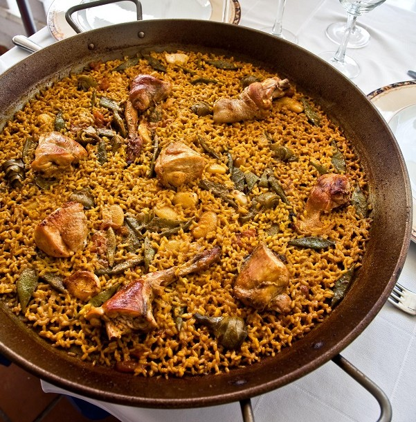

Recetario

Paella valenciana tradicional
Desde platos tradicionales llenos de sabor hasta creaciones modernas que sorprenden al paladar.
Porque sabemos que una buena comida es un placer que merece disfrutarse, te invitamos a descubrir nuestras preparaciones y a dejarte llevar por el auténtico sabor de lo bien hecho, como en casa en ningún sitio.

Los postres son más que el final de una comida; son pequeños momentos de felicidad,
recuerdos dulces que se quedan en la memoria. En CulinarIA, creemos que cada bocado debe ser una experiencia,
una combinación perfecta de sabores,
texturas y aromas que despierten los sentidos.
 Tiramisú
Tiramisú
Tiramisú